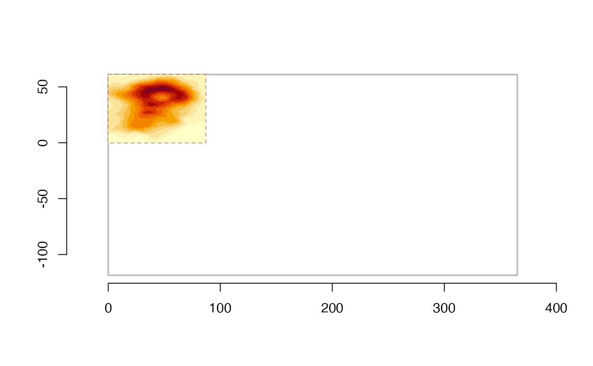
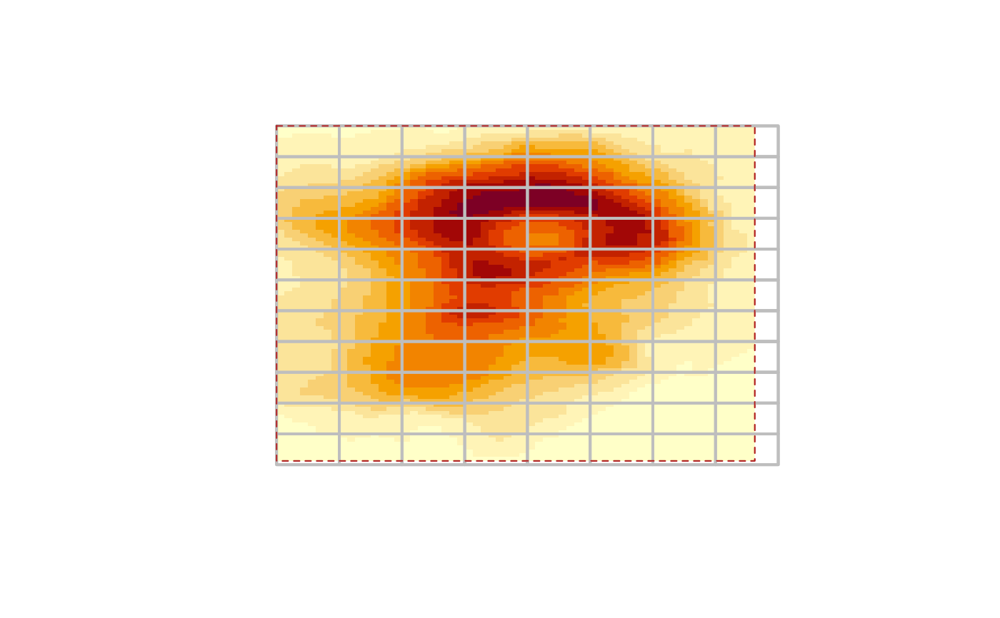

The input may be an actual raster or a matrix. There is an assumed block size of 256x256, and the scheme will record the number of tiles in each dimension and the amount of "overlapping dangle" when the dimensions of the data don't fit neatly within the tiles.
tiles(x, blockX = 256, blockY = 256)a raster, or a matrix
tile dimensions in columns (X)
tile diemnsions in rows (Y)
A "tile scheme" object with information about the tile spacing and extent.
The tile scheme object has print and plot methods for basic information.
See function [as_polys()] to generate tiles from the scheme.
rv <- raster::raster(volcano, xmn = 0, xmx = nrow(volcano),
ymn = 0, ymx = ncol(volcano))
## one (too) big tile
tile <- tiles(rv)
plot(tile)
tile
#> tiles: 1, 1 (x * y = 1)
#> block: 256, 256
#> dangle: 195, 169
#> tile resolution: 365.1148, 179.4943
#> tile extent: 0, 365.1148, -118.4943, 61 (xmin,xmax,ymin,ymax)
#> grain: 1.42623, 0.7011494 (256 : x, 256 : y)
raster::image(rv, add = TRUE)
axis(1); axis(2)

## more size appropriate
tils <- tiles(rv, 8, 8)
plot(tils)
raster::image(rv, add = TRUE)
plot(tils, add = TRUE)
